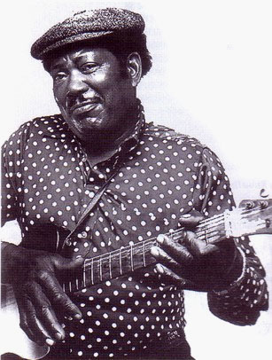
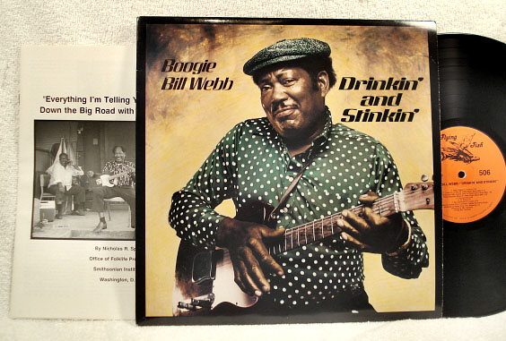

Boogie Bill Webb24.III.1924, Jackson, Mississippi - - 22.VIII.1990, New Orleans, Louisiana,Boogie Bill Webb (24 марта, 1924 – 22 августа, 1990) - американский блюзовый гитарист, певец и сочинитель песен. Музыкальный стиль Webb'а сочетал миссисипский кантри-блюз и новоорлеанский ритм-н-блюз. Лучшими его записями считаются 'Bad Dog' и 'Drinkin' and Stinkin''. За свою долгую (хотя и с перерывами) карьеру, Билл выпустил всего один альбом.  Boogie Bill Webb родился 24 марта 1924 года в Джексоне, штат Миссисипи. Первая гитара появилась в возрасте 8 лет и была сделана из сигарной коробки с натянутой на неё проволокой. Наибольшее влияние на него оказал Tommy Johnson. Уже с настоящей гитарой, подросток Webb в 1947 году выиграл шоу талантов и впоследствии мельккнул в музыкальном фильме The Jackson Jive. В 1952 году переехал в Новый Орлеан.Подружившись с Fats Domino, Webb познакомился и с Dave Bartholomew, благодаря которым заключил контракт со звукозаписывающей компанией Imperial Records. В 1953 Webb выпустил свой дебютный сингл "Bad Dog" - некоммерческий набор кантри и буги-вуги. Раздосадованный отсутствием признания, Webb переехал в Чикаго, где работал на различных заводах. В Чикаго, Webb познакомился с Muddy Waters, John Lee Hooker, Jimmy Reed и Chuck Berry; и участвовал в их концертах. Webb вернулся в Новый Орлеан в 1959 году, работал грузчиком в порту, а музыку исполнял время от времени. Как бы то ни было, в 1968 году он записал несколько песен для фольклориста David Evans, которые в итоге появились в альбоме Roosevelt Holts and His Friends, выпущенному звукозаписывающей компанией Arhoolie Records. А в 1972 году появился сборник The Legacy of Tommy Johnson, включавшая пять композиций, исполненных Webb’ом. Увеличение интереса к музыке Webb’а на родине и в Европе привело к приглашению на гастроли. В 1982 году Webb выступил на голлландском фестивале в Утрехте. Наконец, в 1989 году при финансовой поддержке фонда Louisiana Endowment for the Humanities, Webb выпустил альбом Drinkin' and Stinkin'. На сочинение заглавной песни альбома его вдохновил случай из жизни, когда он познакомился с тремя нетрезвыми женщинами, пившими уже трейти день подряд и забывшими про душ и ванну. Особого внимания достоин 9-й трек с песней Paul Jones And Little Virginia Dare - это не песня, а речитатив с ироничным алкогольным сюжетом... Boogie Bill Webb умер в Новом Орлеане в августе 1990 года в возрасте 66 лет. Перевод ©Александр Сомов Послушать альбом Boogie Bill Webb - 1989 - Drinkin' And Stinkin' ВКонтакте  |